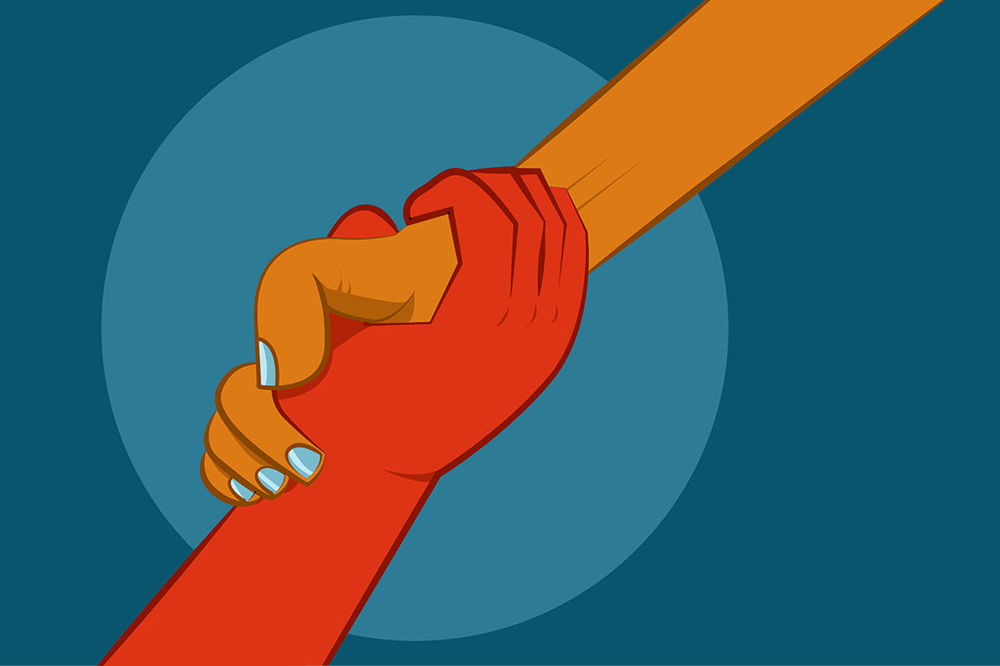

VOLUNTEER WORK
by : Indira Maharani

Halo, Germies! Mungkin beberapa dari kalian udah sering denger kata "volunteer". Jadi apasih sebenernya volunteer itu? Dan apasih benefits-nya buat kita? Baca terus, ya!
Jadi volunteer atau sukarelawan dalam Bahasa Indonesia adalah individu atau kelompok yang memberikan layanan tanpa keuntungan finansial untuk menguntungkan orang lain, kelompok atau organisasi. Kata volunteer dalam Bahasa Inggris dapat diartikan sebagai kata kerja, yaitu melakukan kegiatan yang bersifat sukarela atau sebagai kata benda, yaitu orang yang melakukan kegiatan sukarela tersebut. Karena bersifat sukarela itu, kalau kalian mengikuti kegiatan volunteer ini, pada umumnya kalian tidak dibayar dengan uang. Terus, apa dong untungnya, Germies?
Pasti kalian gak asing dengan pepatah "Experience is the best teacher", ya kan? Kalau kalian ikut kegiatan volunteer, pasti kalian akan dapet banyak banget pengalaman yang berharga, dan pembelajaran dari pengalaman-pengalaman itu bisa kalian aplikasikan di real life kalian. Untuk lebih lengkapnya, simak poin-poin berikut, ya!
1. It’s an opportunity to branch out
Saat kalian melakukan volunteer work, kalian pasti akan berkecimpung di komunitas atau organisasi tersebut. Nah, kesempatan banget nih buat kalian untuk memperluas relasi kalian. Disini, kalian bisa bertemu dengan orang-orang baru di lingkungan yang juga baru sekaligus melatih kemampuan komunikasi kalian. Jadi, cocok banget untuk kalian yang sedang jenuh dengan lingkungan kalian yang sekarang atau simply ingin meningkatkan social skill kalian. Selain itu, volunteer work juga bisa menjadi sarana untuk mengeksplor kembali minat dan bakat kalian.
2. It’s good for your mental health
Volunteering itu pada dasarnya adalah kegiatan membantu dan bekerja dengan orang lain dimana tentunya kalian akan sering melakukan kontak sosial dengan orang lain. Nah, ternyata hal itu juga bisa memberikan dampak yang baik terhadap kesehatan mental kalian, lho! Interaksi dengan orang lain dapat menghilangkan stress dan apabila dilakukan rutin, kalian secara tidak langsung membentuk suatu support system yang dapat mendukung kalian. Pernah nggak kalian dengar kalimat "The more we give, the happier we feel"? Ini juga berlaku untuk volunteer work, lho! Selain itu, volunteer work juga dapat meningkatkan kepercayaan diri karena dapat memberikan kalian a sense of accomplishment. Semakin baik perasaan kalian tentang diri sendiri, semakin positif juga dampaknya bagi kesehatan mental dan pandangan kalian tentang hidup.
3. It’s a career booster
Memang sih, kalau untuk pelajar SMA dan yang lebih muda biasanya belum memikirkan tentang karir karena masih terlampau jauh. But, never underestimate the power of volunteer work on your CV! Volunteering bisa membantu kalian untuk mendapat pengalaman di area yang kalian minati dan kalian juga bisa melatih berbagai softskills yang biasanya sangat berguna di lingkungan pekerjaan, seperti teamwork, komunikasi, problem solving, project planning, serta manajemen pekerjaan dan waktu.
Nah, banyak banget kan keuntungan dari volunteer work, Germies! Namun, saat kalian memutuskan untuk mengikuti suatu kegiatan volunteer, yang paling penting adalah jalankan dengan sikap yang positif, seperti berusaha untuk beradaptasi dan memiliki kemauan yang kuat. Jangan takut bertanya dan jangan takut pula untuk melakukan perubahan. Dan perlu diingat juga, Germies, you should enjoy yourself while doing volunteer work! Kalian gak perlu menghabiskan seluruh waktu kalian untuk melakukan kegiatan volunteer. Anggap saja kegiatan tersebut seperti hobi yang menyenangkan dan menguntungkan buat kalian. Happy volunteering, Germies!